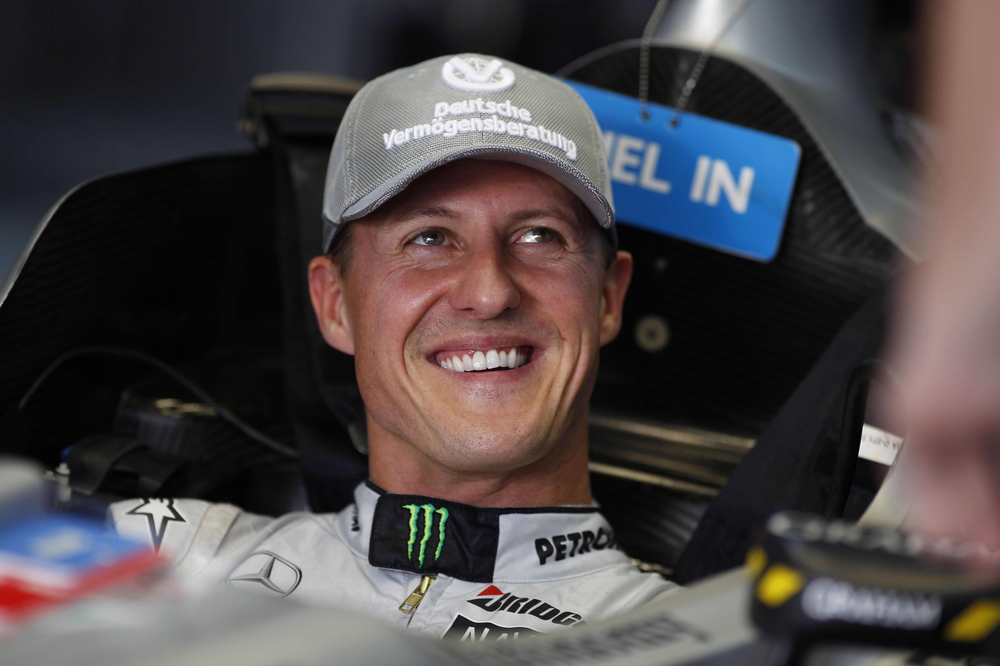

Michael Schumacher

Michael Schumacher (born 3 January 1969) is a German former racing driver who competed in Formula One for Jordan, Benetton, Ferrari, and Mercedes. Schumacher has a joint-record seven World Drivers' Championship titles (tied with Lewis Hamilton); at the time of his retirement from the sport in 2012, he also held the records for the most wins (91), pole positions (68), and podium finishes (155)—which have since been broken by Hamilton—while he maintains the record for consecutive Drivers' Championships and number of total fastest laps (77), among others.
Born to working-class parents, Schumacher started his racing career in karting. He won his first karting championship aged six in a kart built from discarded parts. After having enjoyed success in karting—such as winning the 1987 European karting championship—and in several single-seater series, Schumacher made a one-off Formula One appearance with Jordan at the Belgian Grand Prix. He was signed by Benetton for the rest of the 1991 season. He won his first and second drivers' titles consecutively in 1994 and 1995. Schumacher moved to the struggling Ferrari team in 1996. During his first years at the team, Schumacher lost out on the title in the final race of the season in 1997 and 1998, and suffered a broken leg from a brake failure in 1999. He and Ferrari won five consecutive titles from 2000 to 2004, including unprecedented sixth and seventh titles, breaking several records. After finishing third in 2005 and second in 2006, Schumacher retired from the sport, although he later made a brief return with Mercedes from 2010 to 2012.Career
- Team sauber
- Mercedes
- Ferrari
Major trophies
- 7 Championships 1994-1995,2001-2004